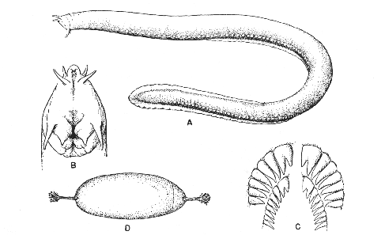

Friday, February the 29th, 2008
back to: title, date or indexes
From across the Atlantic, Hooting Yard podcast listener and aquatic ecologist Darell Slotton writes with important news from the briny deep:
Hagfish are spectacularly disgusting, being sea bottom, naked-looking, smooth, pink eels with a battery of dodgy looking tendrils around the mouth. They burrow enthusiastically into and through carcasses that fall to the bottom, until they are hollowed out. The sight of a carcass bulging frenetically in the dim undersea light, with a dozen of these lovelies inside, is… something. On top of that, if you keep hagfish in an aquarium and reach in to pick them up, they instantly exude a chemical that mixes with seawater to produce a huge ball of snot all around them, which you are left holding as they slip away.

Hagfish diagram from Bigelow and Schroeder, 1948, p. 34.